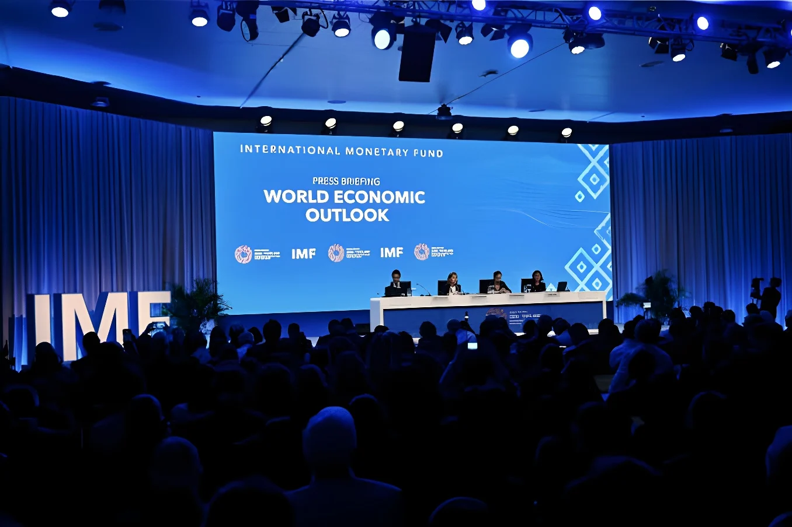

Le mardi 13 octobre 2026, en marge des Assemblées annuelles du FMI et de la Banque mondiale à Bangkok, le Fonds monétaire international a publié ses Perspectives de l'économie mondiale. Il table désormais sur une croissance de 3,1 % en 2026, contre 3,0 % en juillet, avant 3,4 % en 2027. Derrière ce léger mieux se cache une économie coupée en deux : l'Asie et les États-Unis profitent de l'investissement dans l'intelligence artificielle, tandis que les pays émergents et le Golfe subissent de plein fouet la guerre au Moyen-Orient et la flambée de l'énergie.
Le rapport a été présenté à Bangkok, où se tiennent du 12 au 18 octobre les Assemblées annuelles du FMI et du Groupe de la Banque mondiale. La croissance mondiale ralentirait à 3,1 % en 2026, après 3,5 % en 2025, soit 0,1 point de plus que lors de la mise à jour de juillet. La prévision pour 2027, 3,4 %, est inchangée. L'inflation, elle, repartirait à la hausse, de 4,1 % en 2025 à 4,7 % en 2026, avant de revenir à 4,1 % en 2027 : selon le Fonds, son recul « devrait marquer le pas » à cause du « choc négatif d'offre lié à la guerre au Moyen-Orient ». Le commerce mondial ralentirait en 2026 avant de se stabiliser.
Le FMI décrit une croissance « redistribuée » entre les pays selon leur exposition à deux forces opposées. D'un côté, le choc d'offre provoqué par la guerre contre l'Iran et la fermeture du détroit d'Ormuz depuis fin février : le Fonds retient un baril à 96 dollars en moyenne en 2026, soit une hausse de près de 41 % sur l'année et 16 % de plus que dans ses prévisions d'avril, et un gaz européen à 20 dollars par million de BTU, 36 % au-dessus. De l'autre, la vigueur de la demande liée à l'intelligence artificielle. Ses calculs supposent une reprise du trafic à Ormuz en mars 2027, un retour à la normale vers octobre 2027 et une stabilisation du cycle de l'IA.
« The outlook is highly uneven. »
— Silvana Tenreyro, économiste du FMI, 13 octobre 2026 (traduction : « Les perspectives sont très inégales. »)Les économies avancées font mieux que prévu, surtout en Asie, portées par l'investissement dans l'IA : Taïwan devrait croître de 10,7 % et la Corée du Sud de 3,3 %. Les États-Unis restent à 2,3 % en 2026 comme en 2027. Les États-Unis et la Chine représentent plus des trois quarts de la demande nette d'importations de puces et d'équipements liés à l'IA. Signe de concentration, 32 pays seulement assurent désormais 95 % de la croissance mondiale, contre 54 en avril. Au total, les économies avancées croîtraient de 2,1 % en 2026, puis de 1,9 % en 2027.
| Prévisions 2026 | Croissance |
|---|---|
| Monde | 3,1 % |
| États-Unis | 2,3 % |
| Zone euro | 1,1 % |
| France | 0,4 % |
| Chine | 4,5 % |
| Inde | 7,0 % |
| Arabie saoudite | -3,3 % |
| Iran | -7,6 % |
Le FMI publie ses Perspectives : 3,1 % de croissance en 2026.
Ouverture des Assemblées annuelles à Bangkok.
Le G7 libère 100 millions de barils de réserves stratégiques.
Mise à jour du FMI : 3,0 % de croissance prévue.
Frappes contre l'Iran et fermeture du détroit d'Ormuz.
Les pays émergents et en développement paient le prix fort : leur croissance tomberait de 4,5 % en 2025 à 3,7 % en 2026, avant de rebondir à 4,4 % en 2027. Beaucoup dépensent massivement en subventions à l'énergie, au détriment de leurs budgets ; le FMI demande que ces aides restent « temporaires et ciblées ». Le choc est violent au Moyen-Orient et en Afrique du Nord, dont l'activité reculerait de 3,8 % en 2026 avant de rebondir de 8 % en 2027 : l'Arabie saoudite se contracterait de 3,3 %, l'Iran de 7,6 %, et l'Irak, le Qatar, le Koweït et Bahreïn subiraient de fortes récessions. La Chine ralentirait à 4,5 % puis 4 %, freinée par une demande intérieure atone, tandis que l'Inde, à 7 % contre 7,7 % en 2025, resterait la grande économie la plus dynamique. Pour contenir les prix, les pays riches ont puisé dans leurs réserves : le 2 octobre, le G7 a annoncé la libération de 100 millions de barils sur quatre mois.
La zone euro voit sa prévision relevée de 0,2 point, à 1,1 % en 2026, puis 1,2 % en 2027. L'Allemagne, dont le PIB avait reculé en 2023 et en 2024, atteindrait 1,3 %, au-dessus de la moyenne de la zone, et l'Espagne 2,5 %, et le Royaume-Uni est lui aussi revu à la hausse, à 1,3 %. La France fait figure d'exception : sa prévision est abaissée de 0,2 point, à 0,4 % en 2026 et 0,7 % en 2027. Le FMI invoque les vagues de chaleur et les incendies de l'été, ainsi que les incertitudes politiques et budgétaires.
Pour le Fonds, la résilience de l'économie mondiale « est mise à rude épreuve ». Une guerre prolongée, une inflation persistante ou un brutal retournement des attentes liées à l'IA pourraient faire dérailler la croissance ; la Bourse de Séoul, très exposée aux puces, a d'ailleurs reculé de 5,5 % au cours d'une séance récente. S'y ajoutent la hausse des taux d'emprunt des États, une dette publique élevée, les cybermenaces et les droits de douane. La directrice générale, Kristalina Georgieva, estime qu'environ 40 % des emplois seront transformés, déclassés ou supprimés par l'IA, un « tsunami lent, mais un tsunami quand même ».
Le FMI demande aux gouvernements de reconstituer leurs marges de manœuvre budgétaires grâce à des plans crédibles, combinant hausse des recettes, rationalisation des dépenses et réformes des institutions, d'autant que les rendements des obligations souveraines augmentent. La politique monétaire doit être adaptée à la situation de chaque économie, selon que l'inflation importée y menace ou non de s'installer. À moyen terme, le Fonds s'inquiète des déséquilibres mondiaux, qui ne se résorbent que lentement, et des écarts entre pays dans la préparation à l'IA et la solidité de leurs systèmes énergétiques, qui risquent de creuser durablement les inégalités de croissance.
Le chiffre de 3,1 % rassure en apparence : l'économie mondiale encaisse une guerre, un détroit fermé et un pétrole à près de 100 dollars sans basculer dans la récession. Mais cette moyenne masque une fracture. La croissance se concentre dans une poignée de pays qui fabriquent ou achètent les puces de l'IA, quand les importateurs d'énergie et les producteurs du Golfe absorbent l'essentiel du choc.
Le scénario du FMI repose en outre sur deux paris fragiles : la réouverture d'Ormuz au printemps et un atterrissage en douceur de la fièvre de l'IA. Si l'un des deux échoue, la légère révision d'octobre pourrait se transformer en correction brutale.